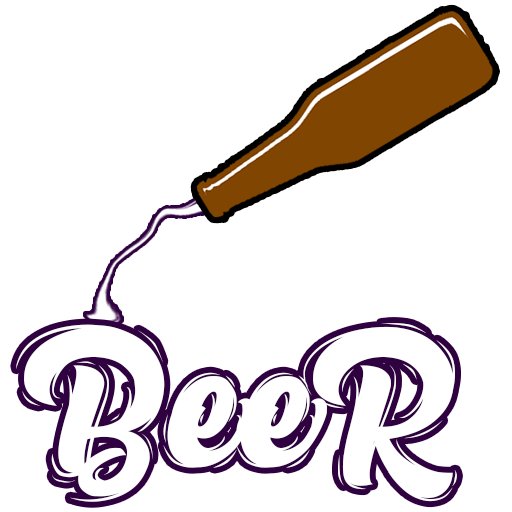

<mat-toolbar color="primary" fxLayout="row" fxLayoutAlign="space-between center">
    
    <div>
        <button mat-icon-button matSuffix >
            <mat-icon>account_circle</mat-icon>
        </button>
        <button mat-icon-button matSuffix [matBadge]="numeroItens" matBadgeColor="warn" routerLink="/carrinho">
            <mat-icon>shopping_cart</mat-icon>
        </button>
    </div>
</mat-toolbar>

<router-outlet></router-outlet>